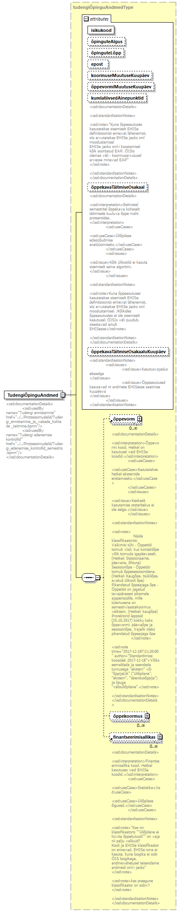

| diagram |
 |
| namespace |
http://www.ern.ee/õpe |
| type |
tudengiÕpinguAndmedType |
| properties |
|
| children |
õppevorm õppekoormus finantseerimisallikas |
| attributes |
| Name | Type | Use | Default | Fixed | Annotation | | isikukood | isikukoodType | required | | | | | õpinguteAlgus | xs:date | | | | | | õpinguteLõpp | xs:date | | | | | | epost | | | | | | | koormuseMuutuseKuupäev | xs:date | | | | | | õppevormiMuutuseKuupäev | xs:date | | | | | | kumlatiivsedAinepunktid | xs:decimal | | | | | documentation | <xsd:documentationDetails>
<xsd:standardisationNotes>
<xsd:note>"Kuna õppeasutuses kasutatakse sisemiselt EHISe definitsioonist erinevat lähenemist, siis arvutatakse EHISe jaoks xml moodustamisel
EHISe jaoks xml-i koostamisel kõik sooritatud EAP, ÕISis olemas väli - koormusarvutusel arvesse minevad EAP"
</xsd:note>
</xsd:standardisationNotes>
</xsd:documentationDetails> |
| | õppekavaTäitmiseOsakaal | xs:decimal | | | | | documentation | <xsd:documentationDetails>
<xsd:interpretation>Eelmistel semestritel õppekava kohaselt täitmisele kuuluva õppe maht protsentides.
</xsd:interpretation>
<xsd:useCases>
<xsd:useCase>Üliõpilase edasijõudmise analüüsimiseks.</xsd:useCase>
</xsd:useCases>
<xsd:issues>
<xsd:issue>Kõik ülikoolid ei kasuta sisemiselt sama algoritmi. </xsd:issue>
</xsd:issues>
<xsd:standardisationNotes>
<xsd:note>Kuna õppeasutuses kasutatakse sisemiselt EHISe definitsioonist erinevat lähenemist, siis arvutatakse EHISe jaoks xml moodustamisel. /Kõikides õppeasutustes ei ole sisemiselt kasutusel; ÕISIs väli puudub, sisestavad ainult EHISesse</xsd:note>
</xsd:standardisationNotes>
</xsd:documentationDetails> |
| | õppekavaTäitmiseOsakaaluKuupäev | xs:date | | | | | documentation | <xsd:standardisationNotes>
<xsd:issues>
<xsd:issue>Kasutusvajadus ebaselge
</xsd:issue>
<xsd:issue>Õppeasutused kasutavad nt andmete EHISesse saatmise kuupäeva
</xsd:issue>
</xsd:issues>
</xsd:standardisationNotes> |
|
|
| annotation |
| documentation | <xsd:documentationDetails>
<xsd:usedBy name="Tudengi ennistamine" href="../../Protsessimudelid/Tudengi_ennistamine_ja_vabade_kohtade _taitmine.bpmn"/>
<xsd:usedBy name="Tudengi edenemise kontrollid" href="../../Protsessimudelid/Tudengi_edenemise_kontrollid_semestris.bpmn"/>
</xsd:documentationDetails> |
|
| source |
<xs:element name="TudengiÕpinguAndmed" type="tudengiÕpinguAndmedType">
<xs:annotation>
<xs:documentation>
<xsd:documentationDetails>
<xsd:usedBy name="Tudengi ennistamine" href="../../Protsessimudelid/Tudengi_ennistamine_ja_vabade_kohtade _taitmine.bpmn"/>
<xsd:usedBy name="Tudengi edenemise kontrollid" href="../../Protsessimudelid/Tudengi_edenemise_kontrollid_semestris.bpmn"/>
</xsd:documentationDetails>
</xs:documentation>
</xs:annotation>
</xs:element> |